Up
Controls
Overall Idea
Real world control systems are (usually, exceptions being things like analog electronics) implemented on computers. This means that even though we likely have a continuous plant, we will be implementing the controller for it discretely. So, we will only have access to quantized, sampled values (both processes making control more difficult). This document outlines discrete design considerations.
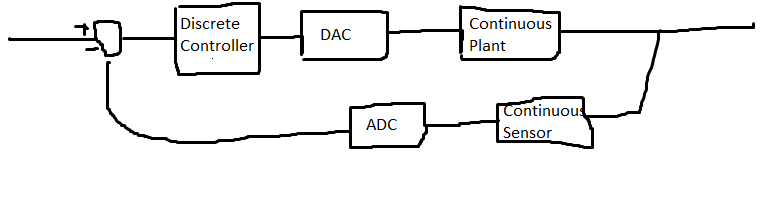
The three main approaches are:
Design a CT controller and then discritize it to a DT controller that includes sampling and holding effects
Convert a CT plant to a DT model and design a DT controller for it
Craft a digital cotroller with a CT plant using a tool like simulink. (Simulink is able to approximate CT models with high complexity, low error difference equations that are created with high order ordinary diffeq solvers)
Discretizing has two main effects: delay in control actions, and sampling. As an analogy, you can imagine being the controller by thinking of using a computer where the screen turns on briefly at 1 sec intervals(sample time), and your mouse moves after your actions (delay). In effect, we are only seeing the state during samples, and our responses to that state are delayed. This is what makes the problem difficult
Discritizing
In continuous space, we have an LTI system, find the impulse response, take the Laplace transform, and then we can apply arbitrary inputs by multiplying by the transfer function.
The most obvious approach to discritizing this uses the Z transform. First, we can find the impulse response of our CT plant. Then, sample it to get a sequence of numbers and apply the Z transform to get a DT version:
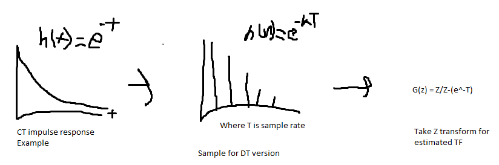
However, in practice, there are different, more specific approaches. These are found by using c2d in matlab. This is the case because sampling results in a loss of information. So, different discritization techniques can minimize the loss of information for different characteristics of interest (step response, Frequency response, Time response). These differences are far less important if sample rate is much less than the system time constant.
The five main methods in Matlab are:
Impulse method: This method creates a TF with the same impulse response as the CT system. This is basically the same as the z-transform method above (intuitively this makes sense because finding the impulse of our z-transform method's result can be done by undoing the z-transform step, giving back the sampled impulse response), the scaling difference (matlab version scaled by Ts) comes from the matlab definition of an impulse(their impulse has length Ts and height 1/Ts, while the z-transform table impulse has width Ts and height 1). The main downside of this method is that it assumes an impulse train as input. In reality, you will never control a motor with bursts of input(letting it spin down between control inputs). You will instead ZOH. Because it assumes an impulse train, it can't model steps well (a step is a ZOH!), and has a poor step response.
Zero Order Hold: This method makes up for the downside of the impulse method when modeling a CT plant that takes in DAC inputs. Since it models the ZOH that DACs do, it has a very good step response (This is intuitive since a ZOH can be represented by U(t) - U(t+1), so a method that represents a ZOH in turn represents a step). Semi-complete derivation here. Importantly, this cannot be used to convert a continuous controller to discrete since there is no ZOH on the ADC sampled inputs to the controller! Instead, an impulse method could be used, but more popular are matched and Tustin. At a high level, this method is modeling the ZOH, original laplace CT plant, and sampler all in one discrete transfer function! As another note, when in simulink, there is an automatic ZOH added between a digital controller and a continuous plant(you can also put an explicit one). If you want to design a continuous controller in conjunction with a continuous plant, you will need to account for the delay of the ZOH. However, since the ZOH is nonlinear, you can't use classical control techniques when one is present. You can instead use the Pade ZOH approximation for the ZOH in the CT design(see simulink image at the bottom of this page)
First Order Hold method: Assumes the slope is constant instead of the previous sample. This is also known as the ramp invariant method - it creates a good ramp response.
Tustin method: AKA the bilinear transform. Uses the trapezoidal integration method to approximate a mapping from s to z. Brian Douglass video explains the derivation better than I ever could. The idea is that we can't use the z=e^sT for the entire system because it will result in nonlinear terms. This only worked in the matched pz method because we did it for a specific point s, so e^sT became a number. We replace e^sT with the 1st order Taylor series expansion: e^sT = 1+ST/1
$$e^{sT} = \frac{e^{sT/2}}{e^{-sT/2}}$$
$$z = \frac{1+\frac{T}{2}s}{1-\frac{T}{2}s} $$
And solving for s instead:
$$s = \frac{2}{T} \frac{z-1}{z+1} $$
This is an approximation of the mapping between the s and z domain. The actuall mapping is found using the z=e^sT definition of the z-transform, but the taylor series is close enough. We can see that the jw-axis in the s plane is mapped to the perimiter of the unit circle in the z-plane. S-plane large negative values are mapped to very near the z-plane origin and increasing in the s-plane jw direction rotates around the z-plane origin. However, the bilinear transform is a warped mapping. It maps s=-1 to 0 (not close to 0), s=j to j(not the same angle), and s=-100 to -99/101 (not 0). In both cases, jw completes the unit circle, but the bilinear transform has highest density at -1 instead of 0. Z transform is shown on the left and Bilinear on the right:
 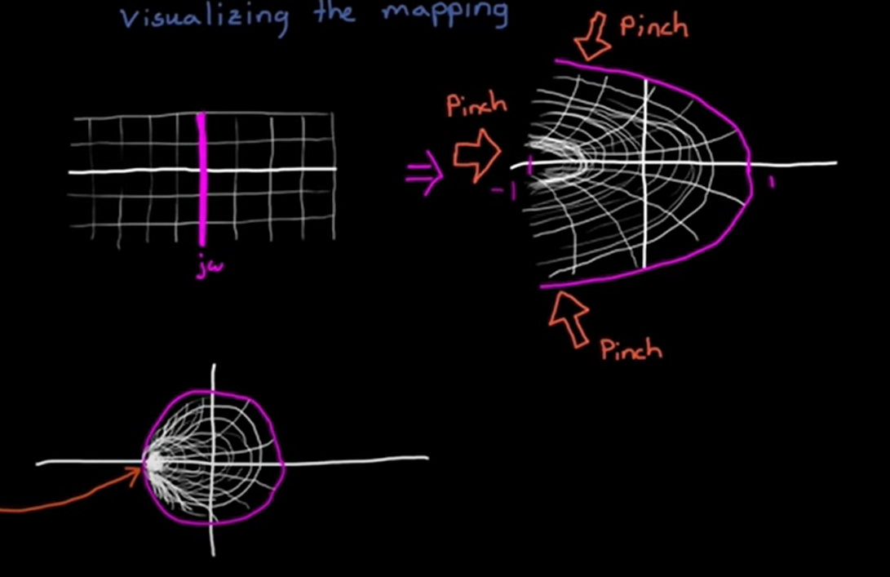
As noted above, the bilinear transform moves frequencies. This can be proven by plugging s=jw into the bilinear transform equation, and then taking the inverse z transform with Z=e^st(I.E get the bilinear transform of a purely imaginary frequency w0 and then plug in z = e^j(wnew)T to see what that frequency is); the output wnew is not the same as the original one. This frequency change is given by:
$$z = e^{jw_{new}T} =\frac{1+\frac{jwT}{2}}{1-\frac{jwT}{2}}$$ Solving for w_new:
$$w_{d} = \frac{1}{2j}ln(\frac{1+w_{a}j}{1-w_{a}j})$$
which simplifies to:
$$w_{d} = \frac{2}{T}arctan(w_{a}\frac{T}{2})$$
Where wd and wa are the analog and digital frequencies repsectively
This change is most dramatic near Nyquist(Nyuist is pi/T rad/sec and w_new can't exceed Nyquist). Intuitively, this results from the bilinear transform pinching jw to -1 instead of rotating jw around 0; anything above Nyquist gets pinched to be right around Nyquist. We can plot input frequency w and output wnew as we sweep w:
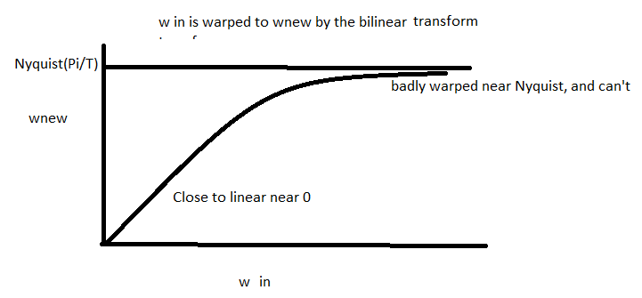
To fix this, we apply a prewarping to w_old. We do this by applying the tan to W first (preemptively undoing the mapping above):
The inverse mapping is(I.E warping that the inverse bilinear transform does):
$$w_{a} = \frac{2}{T}tan(\frac{T}{2}w_{d})$$
The new modified bilinear transform is given by solving the prewarp for 2/T, and plugging it into the bilinear transform. Intuition here (I.E for converting an analog to digital filter) is that we are converting the key frequencies like wc from digital to analog with the known warp. Then we can create a filter with the translated key frequencies and put that in the transform. Step by step, you could do this by converting key frequencies with the tan equation, linearly warping the frequency axis of a known filter to move its corner or whatnot, and then taking bilinear transform.
$$w_{ca} = \frac{2}{T}tan(\frac{T}{2}w_{cd})$$
A more succinct way is with this modified bilinear transform, whcih does all the steps at once:
$$s = \frac{w}{tan(\frac{wT}{2})}\frac{z-1}{z+1}$$
However, this prewarping only fixes a frequency of interest w_old. This makes it useful for notch filtering and such, where we have a clear region of interest
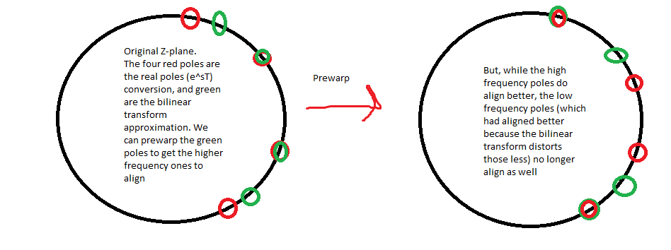
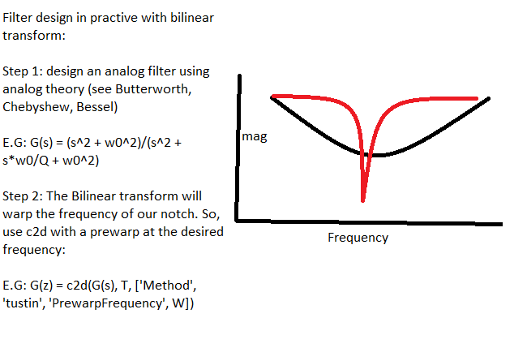
Matched P-Z method: Not widely used and the method is lowkey confusing. The objective is to replicate the frequency response by moving the CT P/Z from the s to the z domain. The intuition here is that the dynamics of the system are defined by its poles, zeros, and dc gain, so, moving them to the z plane should give us the same behavior. This is done in four steps:
Use the definition that z=e^(sT) to create a transfer function with all poles and zeros converted. This isn't complete because
Add in zeros at the Nyquist frequency for each hidden zero. Remember from the Root Locus method that there are p-z hidden zeros at infinity-> intuitively, this is the case because G(s) approaches zero as s approaches infinity for a TF with higher order denominator than numerator (vice versa for higher order numerator giving zeros at inf). We account for them by shifting them down to the Nyquist frequency, which means putting a zero at z=-1. To do this, substitute s = j * 2*pi/T * 1/2 into z=e^(Ts) to find Nyquist.
Create a strictly proper TF. Real systems are causal, so they have =< zeros than poles. To make it strictly proper, remove any nyquist zeros until the system is strictly proper.
Fix the DC gain with a multiplier (setting z to 1 since z = e^sT and solving)
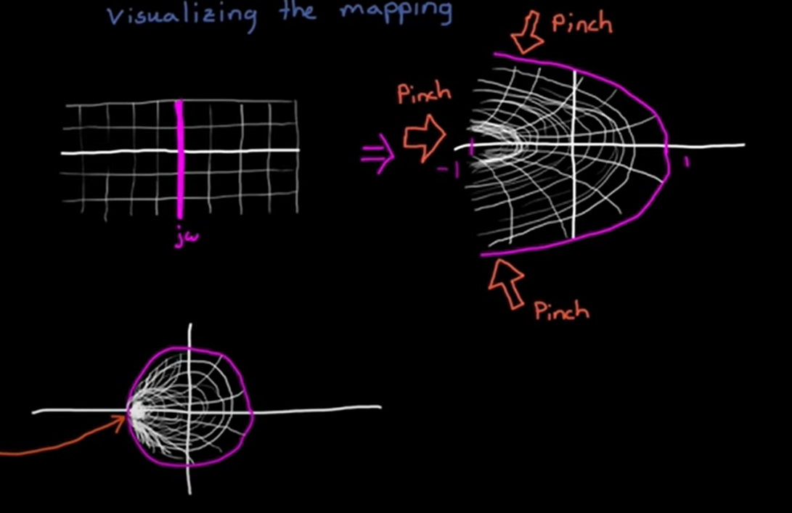
As noted above, the bilinear transform moves frequencies. This can be proven by plugging s=jw into the bilinear transform equation, and then taking the inverse z transform with Z=e^st(I.E get the bilinear transform of a purely imaginary frequency w0 and then plug in z = e^j(wnew)T to see what that frequency is); the output wnew is not the same as the original one. This frequency change is given by:
$$z = e^{jw_{new}T} =\frac{1+\frac{jwT}{2}}{1-\frac{jwT}{2}}$$ Solving for w_new:
$$w_{d} = \frac{1}{2j}ln(\frac{1+w_{a}j}{1-w_{a}j})$$
which simplifies to:
$$w_{d} = \frac{2}{T}arctan(w_{a}\frac{T}{2})$$
Where wd and wa are the analog and digital frequencies repsectively
This change is most dramatic near Nyquist(Nyuist is pi/T rad/sec and w_new can't exceed Nyquist). Intuitively, this results from the bilinear transform pinching jw to -1 instead of rotating jw around 0; anything above Nyquist gets pinched to be right around Nyquist. We can plot input frequency w and output wnew as we sweep w:
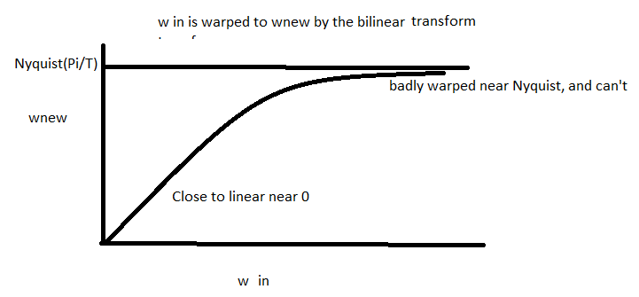
To fix this, we apply a prewarping to w_old. We do this by applying the tan to W first (preemptively undoing the mapping above):
The inverse mapping is(I.E warping that the inverse bilinear transform does):
$$w_{a} = \frac{2}{T}tan(\frac{T}{2}w_{d})$$
The new modified bilinear transform is given by solving the prewarp for 2/T, and plugging it into the bilinear transform. Intuition here (I.E for converting an analog to digital filter) is that we are converting the key frequencies like wc from digital to analog with the known warp. Then we can create a filter with the translated key frequencies and put that in the transform. Step by step, you could do this by converting key frequencies with the tan equation, linearly warping the frequency axis of a known filter to move its corner or whatnot, and then taking bilinear transform.
$$w_{ca} = \frac{2}{T}tan(\frac{T}{2}w_{cd})$$
A more succinct way is with this modified bilinear transform, whcih does all the steps at once:
$$s = \frac{w}{tan(\frac{wT}{2})}\frac{z-1}{z+1}$$
However, this prewarping only fixes a frequency of interest w_old. This makes it useful for notch filtering and such, where we have a clear region of interest
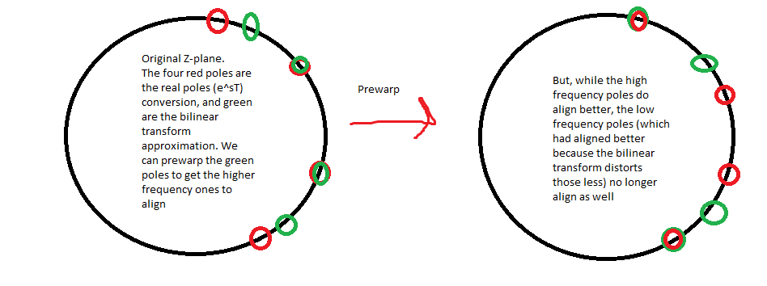
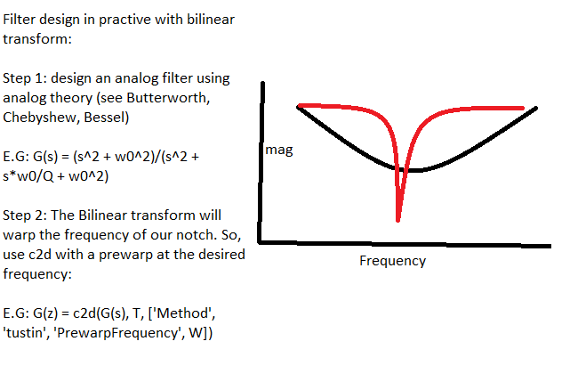
Matched P-Z method: Not widely used and the method is lowkey confusing. The objective is to replicate the frequency response by moving the CT P/Z from the s to the z domain. The intuition here is that the dynamics of the system are defined by its poles, zeros, and dc gain, so, moving them to the z plane should give us the same behavior. This is done in four steps:
Use the definition that z=e^(sT) to create a transfer function with all poles and zeros converted. This isn't complete because
Add in zeros at the Nyquist frequency for each hidden zero. Remember from the Root Locus method that there are p-z hidden zeros at infinity-> intuitively, this is the case because G(s) approaches zero as s approaches infinity for a TF with higher order denominator than numerator (vice versa for higher order numerator giving zeros at inf). We account for them by shifting them down to the Nyquist frequency, which means putting a zero at z=-1. To do this, substitute s = j * 2*pi/T * 1/2 into z=e^(Ts) to find Nyquist.
Create a strictly proper TF. Real systems are causal, so they have =< zeros than poles. To make it strictly proper, remove any nyquist zeros until the system is strictly proper.
Fix the DC gain with a multiplier (setting z to 1 since z = e^sT and solving)
Practical considerations
As discissed in the ZOH section above, when designing our controller, we have to be sure to include the effects of the ZOH. However, this presents some difficulties if we want to design the controller in the CT domain. Designing in the CT domain does not account for the ZOH that will occur when the controller is digitized. So, a workaround is to use the CT approximation of the ZOH, called the Pade method. We can't just inject a ZOH into the continuous domain since it isnt lineear.
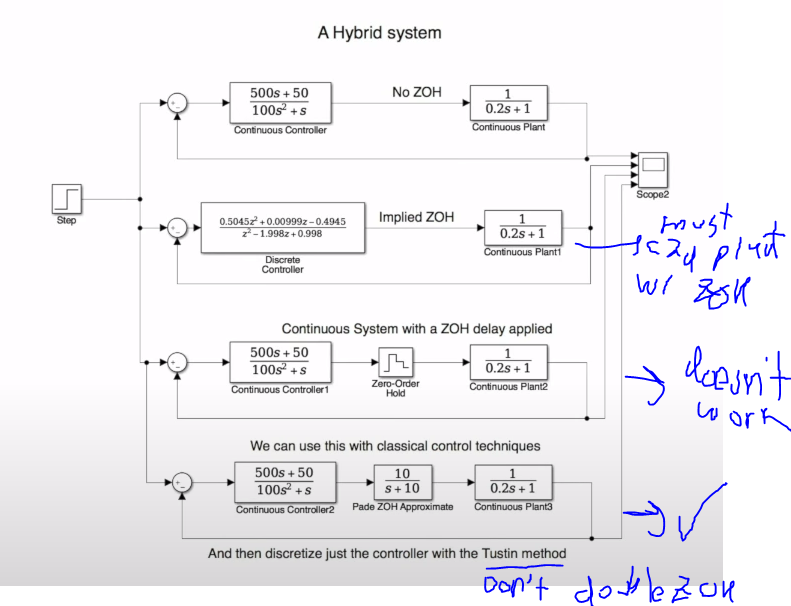
To summarize the two non-hybrid approaches:
Discritize plant: Use a ZOH method to discritize plant, and then design controller with all in Z domain
Discritize contoller method: Use Pade to approximate ZOH in CT, design a CT controller with Pade and CT plant, and then Discritize the controller without a ZOH (Tustin, impulse, matched).
The hybrid approach is to design and tune a discrete controller directly with a CT plant in simulink, but we can't use classical methods here.